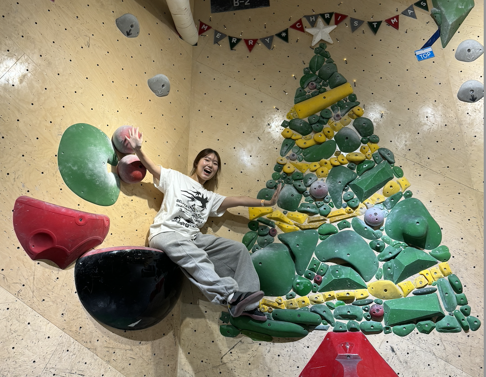
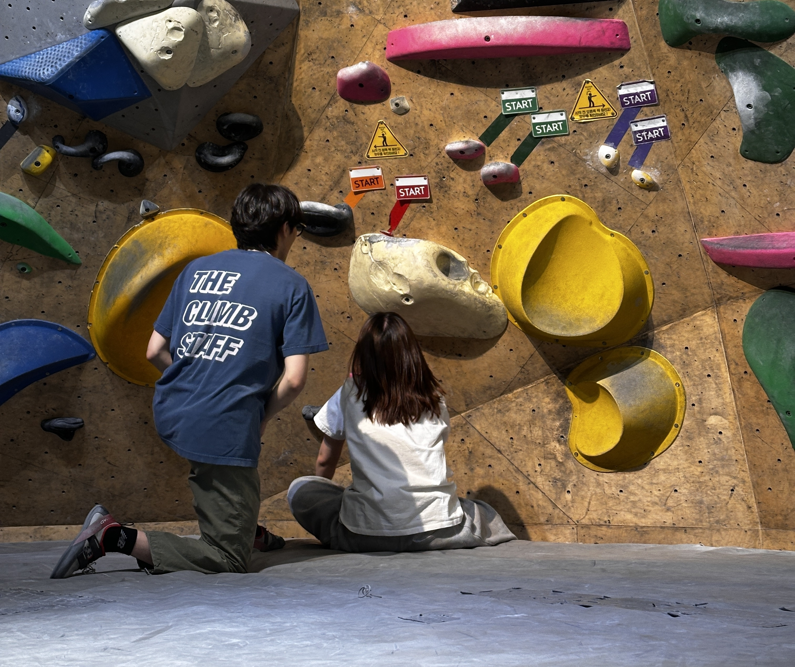
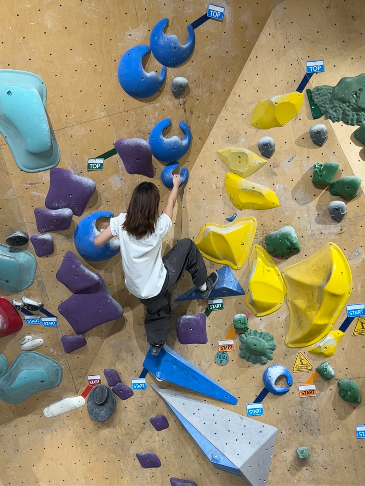
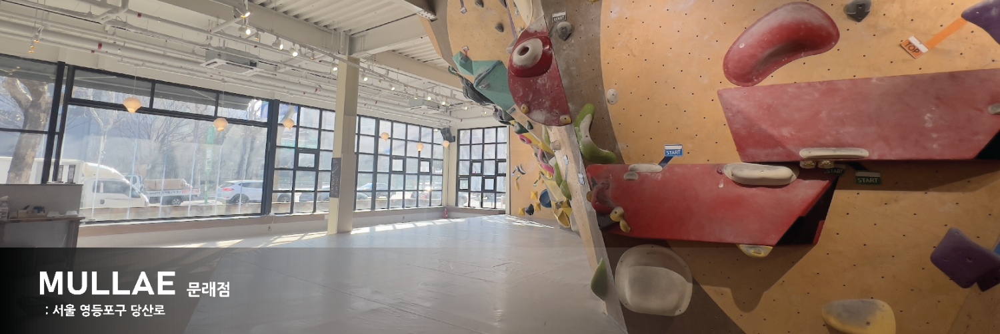

📍 2024.12.16
클라이밍 처음 한 날! 밴드 언니 오빠들이랑 더클라임 양재점에서

📍 2025.03.27
강습 마지막날!
민호쌤 여름에 또 뵈러 가야지

📍 2025.04.28
완전 오랜만에 양재 언니들 만나서
행클.. 2시부터 11시까지 마감클 ㅎㅎ

📍 2025.03.25
첫 빨강 완등한 날!! 너무 너무 뿌듯하당
좋아하는 암장 소개
이름: 더클라임 문래점
위치: 서울 영등포구 당산로 63
운영시간: 평일 : 07:00~24:00, 주말 및 공휴일 : 08:00~22:00
특징: 2층 건물 전체에 문제가 있고, 벽 각도와 문제 스타일이 다양해서 재밌다.